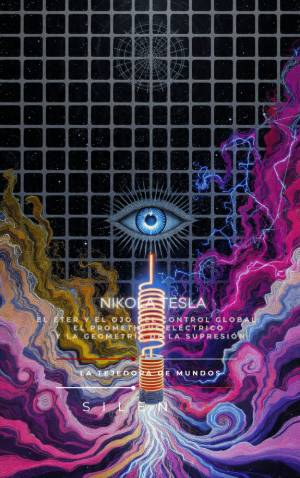

Illuminati
NIKOLA TESLA : El Éter y el Ojo del Control Global: El Prometheus Eléctrico y la Geometría de la Supresión
Sinopsis
¿Fue Nikola Tesla un simple inventor o el arquitecto de una realidad que nos fue arrebatada? Esta obra no es una biografía convencional. Es un viaje profundo a la mente del hombre que nació bajo un rayo en la medianoche y terminó sus días en la soledad de la habitación 3327, custodiado por secretos que el FBI se apresuró a confiscar. A través de sus páginas, descubrirás la conexión entre la ciencia de vanguardia y el misticismo antiguo que permitió a Tesla visualizar inventos completos en su "laboratorio mental" antes de tocar un solo cable. Lo que encontrarás en este libro: El Genio y el Trauma: Cómo la pérdida y la hipersensibilidad sensorial de su infancia se convirtieron en el catalizador de su capacidad visualización cuántico-holográfica. Ciencia y Espiritualidad: El encuentro histórico con Swami Vivekananda y cómo conceptos como el Akasha y el Prana influyeron en su comprensión del Éter y la energía universal. La Guerra por el Control Global: Los detalles detrás del choque con Edison y J.P. Morgan, y cómo la implementación de la "escasez artificial" detuvo el sueño de la energía inalámbrica gratuita. Tecnologías Suprimidas: Un análisis de sus proyectos más enigmáticos, desde el Rayo de la Muerte (Teleforce) y el oscilador telegeodinámico, hasta los misterios de Tunguska y la conexión con civilizaciones perdidas. El Legado Oculto: ¿Qué pasó realmente con los 20 baúles perdidos? Un recorrido desde el informe de John G. Trump hasta la actual cooptación de su nombre por la élite tecnológica moderna. ¿Por qué leer esta obra? Si alguna vez has sentido que la historia de la tecnología es incompleta, este libro te ofrece las piezas faltantes del rompecabezas. Es una invitación a despertar a "Prometeo", a recuperar el conocimiento suprimido y a entender las leyes matemáticas (3, 6, 9) que, según Tesla, eran la llave del universo. Atrévete a mirar a través del Ojo del Control Global y redescubre al hombre que iluminó el mundo, mientras otros intentaban mantenerlo en la oscuridad.